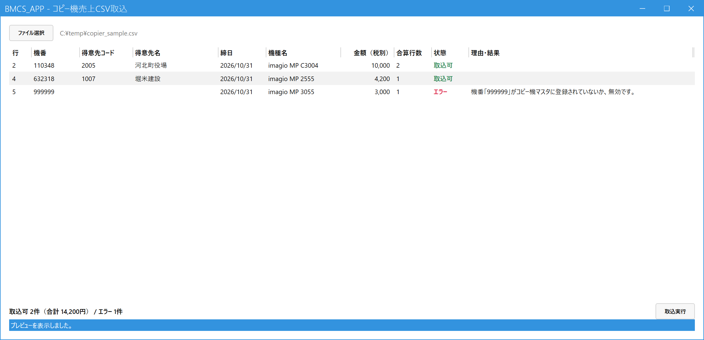

コピー機の売上を取り込む（CSV取込）
こんなときに使います
メーカーから届くコピー機のご利用実績ファイル（CSV）から、機番ごとの売上をまとめて登録します。
1機番・1締日につき売上1伝票ができます。登録後、そのまま納品書も印刷できます。
メーカーから届くコピー機のご利用実績ファイル（CSV）から、機番ごとの売上をまとめて登録します。
1機番・1締日につき売上1伝票ができます。登録後、そのまま納品書も印刷できます。
0.最初に1回だけ必要な準備
| 準備 | 内容 |
|---|---|
| 汎用商品「COPYCHG」の登録 | 商品マスタに、商品コード COPYCHG、商品名「コピー機利用料」、税種別区分「通常税率」を1件登録します。無いと画面に警告が出て、取込できません。 |
| コピー機マスタの登録 | メニュー「マスタ管理」→「コピー機マスタ」で、CSVの機番と得意先を結びつけます（機番を入力して Enter、得意先コードを入力して保存）。1つの得意先に複数の機番を結びつけられます。 |
1.CSVファイルを読み込む
メインメニューの「受注・売上」の中の「コピー機売上CSV取込」を開き、「ファイル選択」を押してCSVを選びます（画面にファイルをドラッグ＆ドロップしてもかまいません）。読み込むと、取り込む前のプレビューが表示されます。この時点では、まだ何も登録されていません。

- ファイル選択：CSVを選ぶ（メーカー出力のまま、Shift-JISの形式で読めます）。
- 合算行数：同じ機番・同じ締日の行は1つにまとめて金額を合計します。この例の「110348」は基本料の行と合わせて2行分（8,500円＋1,500円＝10,000円）です。
- 状態：取込可（緑）なら登録されます。エラー（赤）の行は登録されません。ほかに「取込済」「対象外（0円）」が出ることがあります。
- 理由・結果：エラーの理由がここに出ます。この例は、機番「999999」がコピー機マスタに登録されていません。
- 取り込める件数と合計金額、エラーの件数のまとめです。
- 取込実行：取込可の行だけを売上として登録します。
2.状態を見て、取り込む
- プレビューでエラーの行がないか確認します。エラーの理由と対処は下の表のとおりです。
- 取込実行を押し、確認メッセージで「はい」。取込可の行が1件ずつ登録され、「理由・結果」欄に売上No.（失敗した行は理由）が出ます。
- 終わると「納品書を印字しますか？」と聞かれます。「はい」なら、作った売上の納品書がプレビューなしでまとめて印刷されます。「いいえ」なら納品書は未発行のまま残り、あとで納品書一括発行から出せます。
エラー行があっても、ほかの行は登録されます。取込は1行ずつ別々に行われます。
エラー・状態の見方と対処
| 表示される理由 | 対処 |
|---|---|
| 機番がコピー機マスタに登録されていない／無効 | コピー機マスタに登録してから、同じCSVをもう一度取り込みます。登録済みの行は「取込済」として除かれるので、二重にはなりません。 |
| 請求締め済み・月次締め済みの期間 | 取り込まないか、管理者に締め解除を依頼します。 |
| 税別金額が0円以下（対象外） | 取り込まれません。返品・値引は売上入力で入力します。 |
| 取込済 | 同じ機番・同じ締日は1回しか取り込めません。やり直したいときは、取り込んだ売上を売上入力で取消してから、取り込み直します。 |